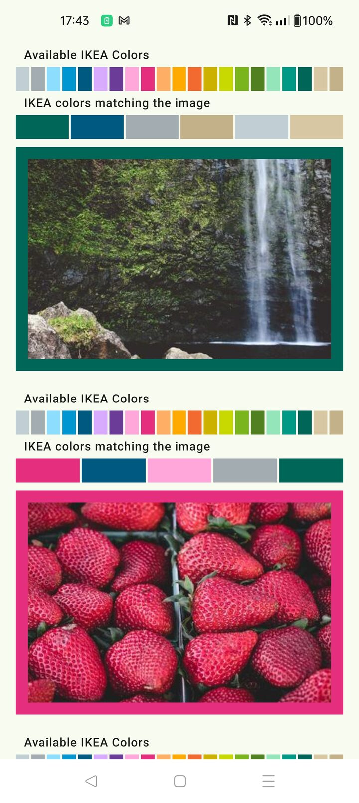

The idea
A frame from a fixed palette
A Jetpack Compose proof-of-concept that frames each photo with the color, from a fixed 21-color palette, that best matches its most prominent hues.

The matching
Vivid beats large
Colors are matched in CIE LAB space and weighted by saturation, so vivid tones beat large neutral areas.
